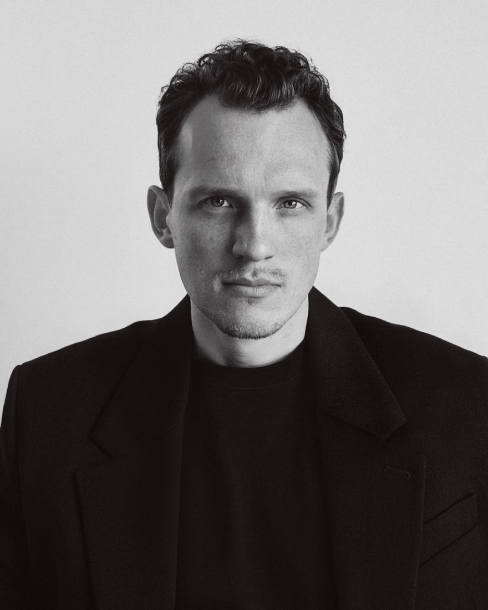

Форум «Равные» · закрытый круг технических руководителей
Трудные решения
не в одиночку
Ваша ситуация и опыт шести равных.
Раз в месяц CTO, VP и Head of Engineering в первые два года роли разбирают то, что нельзя обсудить ни с CEO, ни с командой и уходят с решением и шагом на месяц.
Пилот: февраль — июль 2027, набор до 30 января
Коротко
- Состав
- 6–8 технических руководителей
- Встреча
- Раз в месяц, 2,5 часа онлайн
- Правило
- Опыт, а не советы
- Итог
- Решение и шаг на месяц
- Нет
- записипродажконкурентов
Что приносят на разбор
Ситуации, которые не с кем обсудить: CEO ждёт результата, команде нужна опора, коллеги — часть той же ситуации.
CEO, бизнес, смежники
- CEO требует сроки, которые команда не тянет
- Сверху ждут ускорения от AI, а команда видит в нём угрозу
- Смежники не слушают, а отвечать за результат вам
Команда и люди
- Сильный инженер стал тимлидом и не справляется
- Команда выросла вдвое, и все решения снова сходятся на вас
- Досталась команда и архитектура, которые вы не выбирали
Вы уходите с опытом тех, кто прошёл похожее, и одним шагом на месяц. Примеры типичные, не истории участников.
Здесь не дают советов и ничего не продают. Шесть руководителей, которые проходят то же самое, рассказывают, что делали сами. Вы уходите с решением, а не с чужим мнением.
Как проходит встреча
Два с половиной часа по одному протоколу каждый месяц.
Больше половины времени — разборы.
Модератор держит время и правила.
Содержание принадлежит участникам.
Чек-ин
Как прошёл месяц, что изменилось, есть ли ситуация на разбор.
Отчёт
По обязательствам прошлого месяца: сделал или нет и что узнал.
Разборы
- Подача. Автор рассказывает ситуацию.
- Вопросы. Чтобы понять, а не подсказать.
- Опыт. Каждый: что делал в похожем случае и что вышло.
- Вывод. Автор говорит, что забирает и какой шаг сделает.
Итог
Каждый берёт обязательство на месяц и говорит, что забирает со встречи.
Правила
Участники принимают их вслух на первой встрече. Без них формат не работает.
- 01
Всё остаётся в группе
Без записи, расшифровок и AI‑ассистентов. Модератор не использует содержание встреч ни в публикациях, ни в работе с клиентами.
- 02
Опыт, а не советы
Не «тебе надо», а «у меня было, и вот что вышло».
- 03
Присутствие обязательно
Не больше двух пропусков за полгода, о пропуске — за 72 часа.
- 04
Никто ничего не продаёт
Ни участники, ни модератор — на встречах и в чате.
- 05
Без конфликтов интересов
В одной группе нет конкурентов, отношений «клиент — подрядчик», руководителя и подчинённого.
Для кого
Подойдёт, если
- Вы — CTO, VP или Head of Engineering: первое лицо в технологиях или руководитель руководителей
- В роли до двух лет или вот-вот в неё войдёте
- Команда разработки от 20 человек
- Готовы говорить о своих ошибках и слушать чужие без поучений
Не подойдёт, если
- Вы продаёте техническим руководителям: агентство, аутстафф, рекрутинг, консалтинг
- Нужны готовые ответы и наставник, а не равные
- Цель — знакомства, клиенты или найм
- Нет времени приходить раз в месяц полгода

Модератор
Владимир Семенюк
Ex-CTO Нетологии, ex-CIO mos.ru. Прошёл путь от верстальщика до первого лица в технологиях и закрыл два своих бизнеса — знаю, как выглядит решение, которое не с кем обсудить.
80 → 500человек в организации, которую вёл через рост
50+подготовленных руководителей
1500+часов менторских сессий
В группе я модератор, а не ментор: держу протокол, время и конфиденциальность. Советов не даю и ничего не продаю. Здесь вы получаете не меня, а равных.
Пилот и участие
Первая группа
Обычная цена $250 цена пилота $150в месяц
Оплата за квартал. После первой встречи можно выйти с полным возвратом.
Занять местоНапишите «равные» в Telegram — пришлю анкету. Оплата после разговора, счёт можно выставить на компанию.
- Шесть встреч, февраль — июль 2027. Первая — в начале февраля.
- Время выбираем с участниками. Ориентир — 17:00 по Дубаю: 14:00 Берлин, 16:00 Москва.
- Может платить компания. Она получает счёт и подтверждение участия, но не отчёты о встречах.
- После пилота группа решает, продолжать ли. Первая группа продлевает по цене основателей.
Вопросы
Почему модератор не даёт советов?
Совет человека без полного контекста редко подходит. Опыт — что вы сделали и что вышло — можно примерить на себя. К тому же модератор, который советует, быстро становится главным в комнате, и группа перестаёт работать как группа равных.
Чем это отличается от чата технических руководителей?
Один и тот же круг из шести-восьми человек, конфиденциальность, правила и обязательства, которые проверяются через месяц. Через полгода участники знают контекст друг друга, и опыт становится точнее.
Что, если я пропущу встречу?
Предупредите за 72 часа. За полгода можно пропустить две встречи. После второго пропуска говорим о том, остаётесь ли вы в группе: формат держится на постоянном составе.
Почему участие платное?
Вы платите за модерацию, и модератору от группы больше ничего не нужно. Плата держит явку и отбирает тех, кто готов работать полгода.
Можно сначала попробовать?
Да. Первая встреча и есть проба: если после неё вы решите, что формат не ваш, верну оплату полностью.
Что, если в группе окажется мой конкурент или подрядчик?
Не окажется. На разговоре перед приглашением спрашиваю о конкурентах, подрядчиках и клиентах и собираю состав без конфликтов интересов. Если связь обнаружится позже, участник сразу говорит модератору.
Сколько времени нужно на подготовку?
Если хотите разбор, за три дня до встречи присылаете ситуацию по шаблону на одну страницу. В остальные месяцы готовиться не нужно, кроме своего обязательства.
Почему только первые два года в роли?
Чтобы опыт в группе был сопоставимым. Разбор полезен, когда участники проходят похожее сейчас или прошли недавно. Для опытных CTO нужна другая группа.
Как попасть
Состав подбираю так, чтобы в группе не было конфликтов интересов.
Написать «равные» в TelegramНабор в пилот — до 30 января 2027
- 1
Напишите «равные»
В Telegram или на vladimir@semenyuk.pro.
- 2
Анкета
Шесть коротких вопросов: роль, команда, что сейчас занимает больше всего внимания.
- 3
Разговор на 30 минут
Проверяем, подходит ли формат вам и вы — группе.
- 4
Приглашение
Оплата и устав группы до первой встречи.
Если у вас конкретная ситуация и нужен результат в ближайшие месяцы, это не форум, а персональная работа. Начать можно с разбора «Трезвый взгляд».